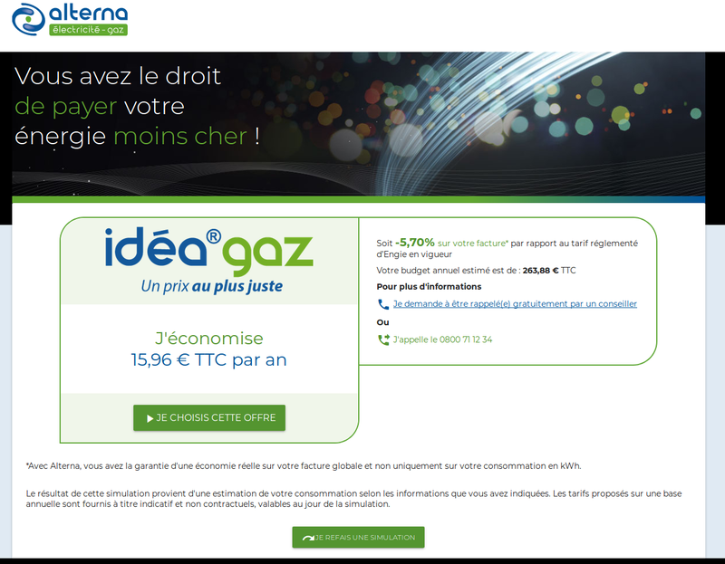

<div id="single-portfolio">
	<div id="portfolio-details" class="container">
		<a class="close-folio-item" href="#">
			<i class="fa fa-times"></i>
		</a>
		
		<div class="row">
			<div class="col-sm-9">
				<div class="project-info">
					<h3>Simulation de facture de gaz et souscription</h3>
					<p>Au cours de mon alternance au sein de la société Iorga j'ai été amené à développer l’application "Simugaz". Cette application
						a été développé pour la société ALTERNA qui est le plus grand fournisseur d’électricité et de gaz en France. Cette
						aplication est un simulateur de gaz qui permet de donner les prix du gaz d’Alterna et les comparer avec les prix de
						leur abonnement actuel et de souscrire à un abonnement en gaz chez Alterna. L’application est actuellement en ligne.
						Voici les spécifications du projet</p>
						<ul>
							<li>Utilisation de Docker pour Node.js et MongoDB</li>
							<li>API en Node.js avec utilisation de MongoDB pour la BDD et d'Express pour le server</li>
							<li>Client en Angular 5 et utilisaiton de Material Design pour le front</li>
							<li>Utilisation de GitLab pour le versioning</li>
						</ul>
				</div>
			</div>
			<div class="col-sm-3">
				<div class="project-details">
					<h3>Details du projet</h3>
					<p>
						<span>Client: </span>Alterna</p>
					<p>
						<span>Tag:</span> Docker, Node.js, Angular 5, MongoDB, Material Design, Express, GitLab<p>
				</div>
			</div>
		</div>
	</div>
</div>